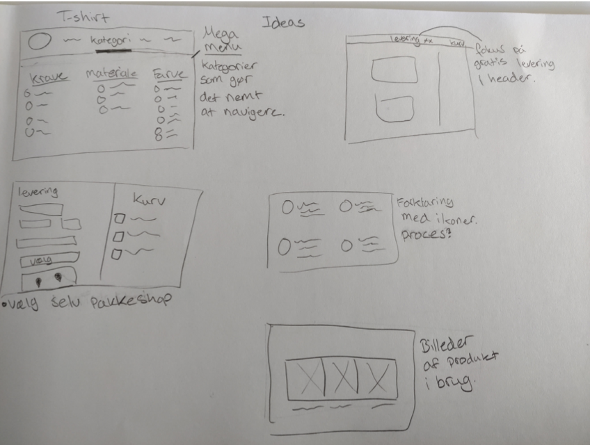

Grundlæggende
UX
Beskrivelse
Grundlæggende UX var et forløb på 3 uger, hvor vi fik erfaring med UX-metoder, at formidle vores research og hvordan man bruger den i praksis, derudover også hvordan man præsenterer et produkt.
I dette Tema, arbejdede vi primært individuelt, men også i grupper. Formålet var at ende ud med en prototype af en webshop til t-shirts.
Research
Desk Research
Reserachen omhandler webshops med gennemsnitlige priser.
Jeg har brugt inspiration fra Asos, Weekday og Zalando.
- Fremhæver fri levering i header.
- Overskueligt design (nemt at navigere).
- Nemt at lave en målrettet søgning.
Observations Research
Jeg observerede en medstuderende, omkring hvordan hun navgirede rundt på en webshop, når hun skulle købe tøj, imens noterede jeg mine indsigter.
Jeg kunne nu vælge nogle indsigter ud som jeg synes er vigtige at have med i mit design.
Fra UX research til idé
I dette emne bruger jer min research, til at skabe en gennemovervejet idé til mit produkt.
Målgruppe
- Kvinder fra 18-30 år.
- Alle størrelser
- Gennemsnitlig indtægt
- Sætter pris på afslapning.
Problemstillinger
Her har jeg noteret ideér til, hvordan mit produkt kan skille sig ud fra konkurrenterne.
Produktet
Simpelt design, god kvalitet, miljøvenligt, eksklusivt til gennemsnitlig pris, måske en t-shirt skal koste omkring 200 kr.
Indsigter
Copywriting
I dette emne lærte vi omkring hvordan copywriting i sammenspil med UI elementer, har en positiv effekt på forbrugeren.
USP
USP, står for et unikt salgsargument.
- Vær komfortabel og afslappet i tøjet uden det kan ses.
Egenskab til fordel
Her lærte vi at omformulere egenskaber for vores produkt, til fordelsagtige beskrivelser.
- Komfortabel - blødt materiale med fri bevægelse.
- Komfortabel - lige så behageligt som søndagstøj.
- Æstetik - ikke bare en t-shirt.
- Gode priser - overskueligt for alle at betale.
- Bredt udvalg af produkter - der er noget for alle (størrelser og smag)
Keywords
De vigtigste ord til sitet.
- Design
- Størrelse
- Komfortabelt
- Passer til alle
- Flot
- Til hverdag og job
Call to action
Catchy tekst for at få forbugeren til at gøre en handling.
- Nyheder
- Vi har samlet alt det blødeste - Udforsk
Skitser
Element ideér
Crazy 8 (navigation)
Wireframe
Jeg tegnede en skitse af hvordan jeg forestillede mig at min index side skulle se ud. Senere fandt jeg ud af, at det ville være nemmere at opbygge siden som mobile-first – det valgte jeg at ændre i min prototype.

Prototype
Her lærte vi mere om hvad Adobe XD faktisk kan, hvordan man kan arbejde hurtigt, og få produceret en livagtig prototype, som kan fremvises til en potentiel kunde.
Moodboard

Styletile

Keywords
Jeg har forsøgt at tilføje mine vigtigste ord, rundt omkring på mit endelige design.

Adobe XD
Vi lærte hvordan man via Adobe XD, kan få ens design til at opføre sig som var det en kodet side, ved at linke til de forskellige artworks.